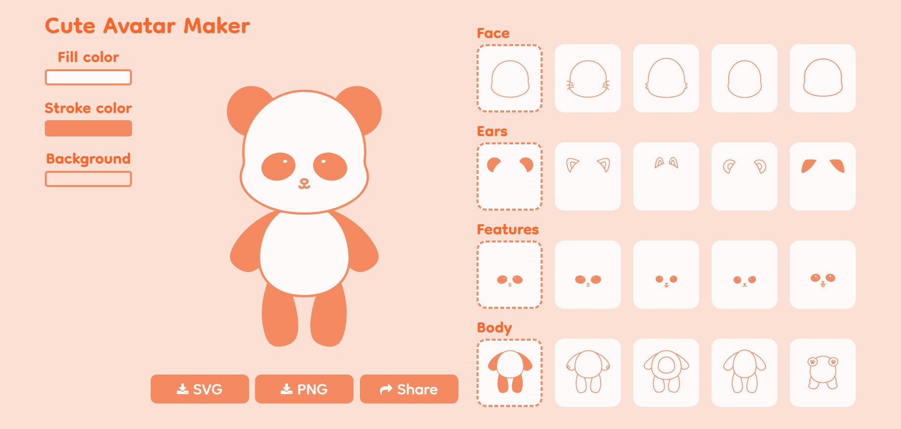

CUTE AVATAR MAKER
CUTE AVATAR MAKER is a website that allows people to create their own avatar images with their desired combination of appearance and colors.
GOAL
CUTE AVATAR MAKER is a self-coded project that involved the use of HTML, CSS, and Java Scripts. The goal of CUTE AVATAR MAKER is to be a tool for users to investigate their perception of cuteness by manipulating various options and creating what they think is cute.
FINAL SCREEN

WHY THIS PROJECT
The term cute, or cuteness, something that appears around us frequently, is the main inspiration for the creation of this project. Despite the fact that I had used and felt this term frequently in my daily life, one day I shockedly realized that I couldn't answer the question: What is "cute"? While many of us have thought something was cute before, it is less likely that we have learned or thought deeply about the term cuteness beyond having a vague idea of what things are "cute." With the desire to learn and explore the term cuteness and how others perceive it, the CUTE AVATAR MAKER has been created.
RESEARCH BRIEF
My research on cuteness includes everything from the term's "official" definition to its etymology, the scientific factors that make something cute, the reasons behind the factors, the impacts, and where the impact occurs, etc. In addition, I conducted a survey to collect data on how people perceive cuteness. With questions about how people define cuteness, what they think is cute, the factors that make them think things cute, the importance of cuteness, and how people feel about it, etc.
From my research, I have learned something called “baby schema,” a set of infantile physical features that have been perceived as cute that was put together by the ethologist Konrad Lorenz. The features it included are large head, big eyes, high forehead, chubby cheeks, small nose and mouth, plump body shape, short and thick extremities, and round or soft body features, etc.
And from the survey responses I received, I have also learned that when people seek cute things, they are looking for an aura or feeling that is soft, bright, and friendly. And light pastel colors like pink, peach, and light blue have been the colors that people associate with cuteness the most.